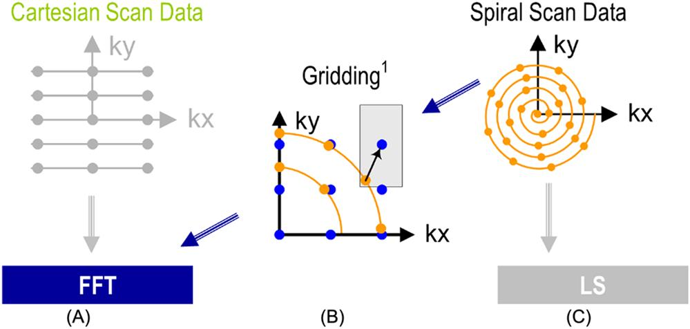
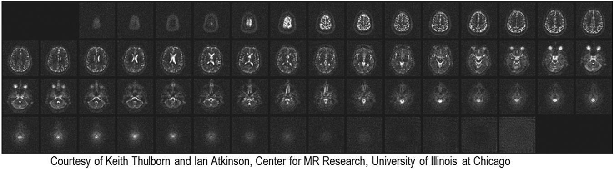
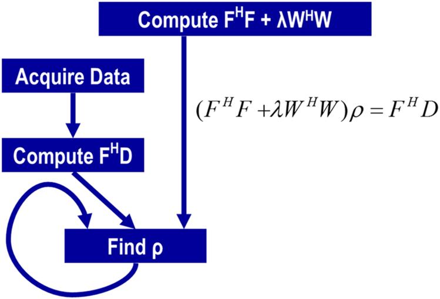
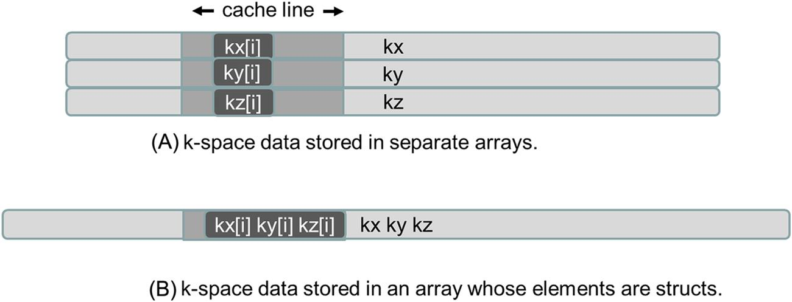
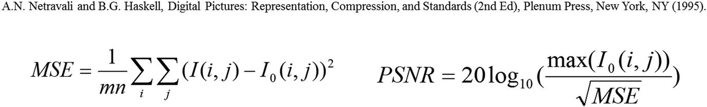
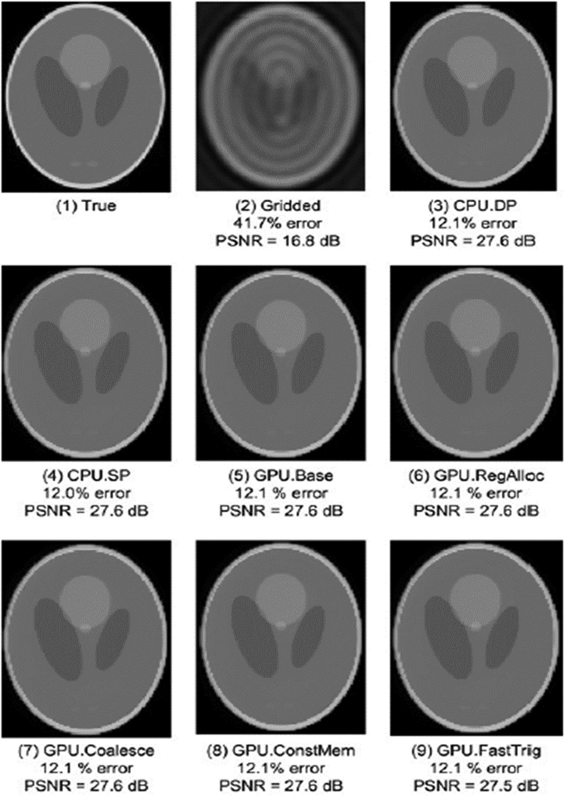

In this chapter we present the key steps for parallelizing and optimizing a loop-intensive application, iterative reconstruction of magnetic resonance imaging images, from its sequential form. We start with the appropriate organization of parallelization: the scatter approach versus the gather approach. We show that transforming from a scatter approach to a gather approach is key to avoiding atomic operations, which can significantly reduce the performance of parallel execution. We discuss the practical techniques, that is, loop fission and loop interchange, that are needed to enable the gather approach to parallelization. We further present the application of optimization techniques such as promoting array elements into registers, using constant memory/cache for input elements, and using hardware functions to improve the performance of the parallel kernel.
Statistical estimation methods; matrix-vector multiplication; linear solvers; iterative methods; MRI; non-Cartesian scan trajectory; scatter parallelization; gather parallelization; loop fission; loop interchange; cross-iteration dependence; constant memory; constant cache; signal-to-noise ratio; trigonometry functions
In this chapter we start with the background and problem formulation of a relatively simple application that has traditionally been constrained by the limited capabilities of mainstream computing systems. We show that parallel execution not only speeds up the existing approaches but also allows the applications experts to pursue an approach that has been known to provide benefit but was previously ignored because of the excessive computational requirements. This approach represents an increasingly important class of computational methods that derive statistically optimal estimation of unknown values from a very large amount of observational data. We use an example algorithm and its implementation source code from such an approach to illustrate how a developer can systematically determine the kernel parallelism structure, assign variables into different types of memories, steer around limitations of the hardware, validate results, and assess the impact of performance improvements.
Magnetic resonance imaging (MRI) is commonly used as a medical procedure to safely and noninvasively probe the structure and function of biological tissues in all regions of the body. Images that are generated by using MRI have had a profound impact in both clinical and research settings. MRI consists of two phases: acquisition (scan) and reconstruction. During the acquisition phase, the scanner samples data in the k-space domain (i.e., the spatial frequency domain or Fourier transform domain) along a predefined trajectory. These samples are then transformed into the desired image during the reconstruction phase. Intuitively, the reconstruction phase estimates the shape and texture of the tissues on the basis of the observation k-space data collected from the scanner.
The application of MRI is often limited by high noise levels, significant imaging artifacts, and/or long data acquisition times. In clinical settings, short scan times not only increase scanner throughput but also reduce patient discomfort, and this tends to mitigate motion-related artifacts. High image resolution and fidelity are important because they enable early detection of pathology, leading to improved prognoses for patients. However, the goals of short scan time, high resolution, and high signal-to-noise ratio (SNR) often conflict; improvements in one metric tend to come at the expense of one or both of the others. New technological breakthroughs are needed to enable simultaneous improvement on all of three dimensions. This study presents a case in which massively parallel computing provides such a breakthrough.
The reader is referred to MRI textbooks such as Liang and Lauterbur (1999) for the physics principles behind MRI. For this case study, we will focus on the computational complexity in the reconstruction phase and how the complexity is affected by the k-space sampling trajectory. The k-space sampling trajectory used by the MRI scanner can significantly affect the quality of the reconstructed image, the time complexity of the reconstruction algorithm, and the time required for the scanner to acquire the samples. Eq. (17.1) shows a formulation that relates the k-space samples to the reconstructed image for a class of reconstruction methods:
(17.1)
In Eq. (17.1), m(r) is the reconstructed image, s(k) is the measured k-space data, and W(k) is the weighting function that accounts for nonuniform sampling; that is, W(k) decreases the influence of data from k-space regions where a higher density of samples points are taken. For this class of reconstructions, W(k) can also serve as an apodization filtering function that reduces the influence of noise and reduces artifacts due to finite sampling.
If data are acquired at uniformly spaced Cartesian grid points in the k-space under ideal conditions, then the W(k) weighting function is a constant and can thus be factored out of the summation in Eq. (17.1). Furthermore, with the uniformly spaced Cartesian grid samples, the exponential terms in Eq. (17.1) are uniformly spaced in the k-space. As a result, the reconstruction of m(r) becomes an inverse fast Fourier transform (FFT) on s(k), an extremely efficient computation method. A collection of data measured at such uniformed spaced Cartesian grid points is referred to as a Cartesian scan trajectory. Fig. 17.1A depicts a Cartesian scan trajectory. In practice, Cartesian scan trajectories allow straightforward implementation on scanners and are widely used in clinical settings today.

Although the inverse FFT reconstruction of Cartesian scan data is computationally efficient, non-Cartesian scan trajectories often have an advantage in reduced sensitivity to patient motion, better ability to provide self-calibrating field inhomogeneity information, and reduced requirements for scanner hardware performance. As a result, non-Cartesian scan trajectories such as spirals (shown in Fig. 17.1(C)), radial lines (also known as projection imaging), and rosettes have been proposed to reduce motion-related artifacts and address scanner hardware performance limitations. These improvements have recently allowed the reconstructed image pixel values to be used for measuring subtle phenomenon such as tissue chemical anomalies before they become anatomical pathology.
Fig. 17.2 shows such an MRI reconstruction-based measurement that generates a map of sodium, a heavily regulated substance in normal human tissues. The information can be used to track tissue health in stroke and cancer treatment processes. Because sodium is much less abundant than water molecules in human tissues, measuring sodium levels reliably requires a higher SNR through a higher number of samples and therefore needs to mitigate the extra scan time with non-Cartesian scan trajectories. The improved SNR enables reliable collection of in vivo concentration data on chemical substances, such as sodium, in human tissues. The variation or shifting of the sodium concentration suggests early signs of disease development or tissue death. For example, the sodium map of a human brain shown in Fig. 17.2 can be used to give early indication of brain tumor tissue responsiveness to chemotherapy protocols, enabling individualized medicine.

Image reconstruction from non-Cartesian trajectory data presents both challenges and opportunities. The main challenge arises from the fact that the exponential terms are no longer uniformly spaced; the summation does not have the form of an FFT anymore. Therefore one can no longer perform reconstruction by directly applying an inverse FFT to the k-space samples. In a commonly used approach called gridding, the samples are first interpolated onto a uniform Cartesian grid and then reconstructed by using the FFT (see Fig. 17.1B). For example, a convolution approach to gridding takes a k-space data point, convolves it with a gridding convolution mask, and accumulates the results on a Cartesian grid. As we saw in Chapter 7, Convolution, is quite computationally intensive and is an important pattern for massively parallel computing. The reader already has the skills for accelerating convolution gridding computation with parallel computing and thus facilitating the application of the current FFT approach to non-Cartesian trajectory data.
In this chapter we will cover an iterative, statistically optimal image reconstruction method that can accurately model imaging physics and bound the noise error in the resulting image pixel values. Such statistically optimal methods are gaining importance in the wake of big data analytics. However, such iterative reconstruction methods have been impractical for large-scale three-dimensional (3D) problems, owing their excessive computational requirements compared to gridding. Recently, these reconstructions have become viable in clinical settings because of the wide availability of GPUs. An iterative reconstruction algorithm that used to take hours using high-end sequential CPUs to reconstruct an image of moderate resolution now takes only minutes using both CPUs and GPUs, a delay that is acceptable in clinical settings.
Haldar and Liang proposed a linear solver–based iterative reconstruction algorithm (Stone et al., 2008) for non-Cartesian scan data, as shown in Fig. 17.1C. The algorithm allows for explicitly modeling the physics of the scanner data acquisition process and can thus reduce the artifacts in the reconstructed image. However, it is computationally expensive. We use this as an example of innovative methods that have required too much computation time to be considered practical. We will show that massively parallel execution can reduce the reconstruction time to the order of a minute so that the new imaging capabilities, such as sodium imaging, can be deployed in clinical settings.
Fig. 17.3 shows a solution of the quasi-Bayesian estimation problem formulation of the iterative linear solver–based reconstruction approach, where ρ is a vector containing voxel values for the reconstructed image, F is a matrix that models the physics of imaging process, D is a vector of data samples from the scanner, and W is a matrix that can incorporate prior information such as anatomical constraints. FH and WH are the Hermitian transpose (or conjugate transpose) of F and W, respectively, by taking the transpose and then taking the complex conjugate of each entry (the complex conjugate of being . In clinical settings, the anatomical constraints represented in W are derived from one or more high-resolution, high-SNR water molecule scans of the patient. These water molecule scans reveal features such as the location of anatomical structures. The matrix W is derived from these reference images. The problem is to solve for ρ given all the other matrices and vectors.

On the surface, the computational solution to the problem formulation in Fig. 17.3 should be very straightforward. It involves matrix multiplication and addition (FHF+λWHW), matrix-vector multiplication (FHD), matrix inversion (FHF+λWHW)−1, and finally matrix multiplication ((FHF+λWHW)−1*FHD). However, the sizes of the matrices make this straightforward approach extremely time-consuming. The dimensions of FH and F matrices are determined by the number of voxels in the 3D reconstructed image and the number of k-space samples used in the reconstruction. Even in a modest resolution 1283-voxel reconstruction, there are 1283=2 million columns in F with N elements in each column, where N is the number of k-space samples that are used (size of D). Obviously, F is extremely large. Such massive dimensions are commonly encountered in big data analytics when one tries to use iterative solver methods to estimate the major contributing factors of a massive amount of noisy observational data.
The sizes of the matrices that are involved are so large that the matrix operations that are involved in a direct solution of the equation in Fig. 17.3 using methods such as Gaussian elimination are practically intractable. An iterative method for matrix inversion, such as the conjugate gradient (CG) algorithm, is therefore preferred. The CG algorithm reconstructs the image by iteratively solving the equation in Fig. 17.3 for ρ. During each iteration the CG algorithm updates the current image estimate ρ to improve the value of the quasi-Bayesian cost function. The computational efficiency of the CG technique is determined largely by the efficiency of matrix-vector multiplication operations involving FHF+λWHW and ρ, as these operations are required during each iteration of the CG algorithm.
Fortunately, the matrix W often has a sparse structure that permits efficient implementation of WHW, and the matrix FHF is Toeplitz, which enables efficient matrix-vector multiplication via the FFT. Stone et al. (2008) present a GPU-accelerated method for calculating Q, a data structure that allows us to quickly calculate matrix-vector multiplication involving FHF without actually calculating FHF itself. The calculation of Q can take days on a high-end CPU core. Since F models the physics of the image process, it needs to be done only once for a given scanner and planned trajectory. Thus Q needs to be calculated only once and is used for multiple scans using the same scan trajectory.
The matrix-vector multiply to calculate FHD takes about one order of magnitude less time than Q but can still take about 3 hours for a 1283-voxel reconstruction on a high-end sequential CPU. Recall that D is the vector of data samples from the scanner. Thus since FHD needs to be computed for every image acquisition, it is desirable to reduce the computation time of FHD to minutes.1 We will show the details of this process. As it turns out, the core computational structure of Q is identical to that of FHD; Q just involves much more computation because it deals with matrix multiplication rather than just matrix-vector multiplication. Thus it suffices to discuss one of them from the parallelization perspective. We will focus on FHD, since this is the one that will need to be run for each data acquisition.
The “find ρ” step in Fig. 17.3 performs the actual CG based on FHD. As we explain earlier, precalculation of Q makes this step much less computationally intensive than FHD, accounting for less than 1% of the execution of the reconstruction of each image on a sequential CPU. As a result, we will leave the CG solver out of the parallelization scope and focus on FHD in this chapter. However, we will revisit its status at the end of the chapter.
Fig. 17.4 shows a sequential C implementation of the computations for the core step of computing a data structure for computing FHD. The computations start with an outer loop that iterates through the k-space samples (line 01). A quick glance at Fig. 17.4 shows that the C implementation of FHD is an excellent candidate for acceleration because it exhibits substantial data parallelism. The algorithm first computes the real and imaginary components of Mu (rMu and iMu) at the current sample point in the k-space. It then enters an inner n-loop that computes the contribution of the current k-space sample to the real and imaginary components of FHD at each voxel in the image space. Keep in mind that M is the total number of k-space samples and N is the total number of voxels in the reconstructed image. The value of FHD at any voxel depends on the values of all k-space sample points. However, no voxel elements of FHD depend on any other voxel elements of FHD. Therefore all elements of FHD can be computed in parallel. Specifically, all iterations of the outer loop can be done in parallel, and all iterations of the inner loop can be done in parallel. However, the calculations of the inner loop have a dependence on the calculation done by the preceding statements in the same iteration of the outer loop.
Despite the algorithm’s abundant inherent parallelism, potential performance bottlenecks are evident. First, in the loop that computes the elements of FHD, the ratio of floating-point operations to memory accesses is at best 0.75 OP/B and at worst 0.25 OP/B. The best case assumes that the sin and cos trigonometry operations are computed by using five-element Taylor series that require 13 and 12 floating-point operations, respectively. The worst case assumes that each trigonometric operation is computed as a single operation in hardware. As we saw in Chapter 5, Memory Architecture and Data Locality, a substantially higher floating-point arithmetic to global memory access ratio is needed for the kernel not to be limited by memory bandwidth. Thus the memory accesses will clearly limit the performance of the kernel unless the ratio is drastically increased.
Second, the ratio of floating-point arithmetic to floating-point trigonometry functions is only 13:2. Thus a GPU-based implementation must tolerate or avoid stalls due to the long latency and low throughput of the sin and cos operations. Without a good way to reduce the cost of trigonometry functions, the performance will likely be dominated by the time that is spent in these functions.
We are now ready to take the steps in converting FHD from sequential C code to a CUDA kernel.
The conversion of the loops in Fig. 17.4 into a CUDA kernel is conceptually straightforward. Since all iterations of the outer loop of Fig. 17.4 can be executed in parallel, we can simply convert the outer loop into a CUDA kernel by mapping its iterations to CUDA threads. Fig. 17.5 shows a kernel from such a straightforward conversion. Each thread implements an iteration of the original outer loop; that is, we use each thread to calculate the contribution of one k-space sample to all FHD elements. The original outer loop has M iterations, and M can be in the millions. We obviously need to have a large number of thread blocks to generate enough threads to implement all these iterations.
To make performance tuning easy, we declare a constant FHD_THREADS_PER_BLOCK that defines the number of threads in each thread block when we invoke the cmpFhD kernel. Thus we will use M/FHD_THREADS_PER_BLOCK for the grid size and FHD_THREADS_PER_BLOCK for the block size when invoking the kernel. Within the kernel, each thread calculates the original iteration of the outer loop that it is assigned to cover, using the familiar formula blockIdx.x*FHD_THREADS_PER_BLOCK + threadIdx.x. For example, assume that there are 1,000,000 k-space samples and we decide to use 1024 threads per block. The grid size at kernel innovation will be 1,000,000/1024=977 blocks. The block size will be 1,024. The calculation of m for each thread will be equivalent to blockIdx.x*1024+threadIdx.
While the kernel of Fig. 17.5 exploits ample parallelism, it suffers from a major problem: All threads write into all rFhD and iFhD voxel elements. This means that the kernel must use atomic operations in the global memory in the inner loop in order to keep threads from trashing each other’s contributions to the voxel value (lines 10–11). As we saw in Chapter 9, Parallel Histogram, heavy use of atomic operations on global memory data can seriously reduce the performance of parallel execution. Furthermore, the size of the rFhD and iFhD arrays, which is the total number of voxels in the reconstructed image, makes privatization in shared memory infeasible. We need to explore other options.
The arrangement for each thread to take an input element (k-space sample in this application) and update all or many output elements (voxels of the reconstructed image in this application) is referred to as the scatter approach. Intuitively, each thread scatters the effect of an input to many output values. Unfortunately, threads in the scatter approach can update the same output elements and potentially trash each other’s contributions. Thus atomic operations are needed for a scatter approach in general and tend to negatively impact the performance of parallel execution.
A potentially better alternative to the scatter approach is to use each thread to calculate one output element by collecting the contributions from all input elements, which is referred to as the gather approach. The gather approach ensures that the threads update only their designated output elements and never interfere with each other. In our application, parallelization based on the gather approach assigns each thread to calculate one pair of rFhD and iFhD elements from all k-space samples. As a result, there is no interference between threads and no need for atomic operations.
To adopt the gather approach, we need to make the n-loop the outer loop so that we can assign each iteration of the n-loop to a thread. This can be done by swapping the inner loop and the outer loop in Fig. 17.4 so that each of the new outer loop iterations processes one rFhD/iFhD element pair. That is, each of the new outer loop iterations will execute the new inner loop that accumulates the contribution of all k-space samples to the rFhD/iFhD element pair handled by the outer loop iteration. This transformation of the loop structure is called loop interchange. It requires a perfectly nested loop, meaning that there is no statement between the outer for-loop statement and the inner for-loop statement. However, this is not true for the FhD code in Fig. 17.4. We need to find a way to move the calculation of rMu and iMu elements out of the way.
From a quick inspection of Fig. 17.4 we see that the FHD calculation can be split into two separate loops, as is shown in Fig. 17.6, using a technique called loop fission or loop splitting. This transformation takes the body of a loop and splits it into two loops. In the case of FHD the outer loop consists of two parts: the statements before the inner loop and the inner loop itself. As is shown in Fig. 17.6, we can perform loop fission on the outer loop by placing the statements before the inner loop into a first loop and the inner loop into a second loop.
An important consideration in loop fission is that the transformation changes the relative execution order of the two parts of the original outer loop. In the original outer loop, both parts of the first iteration execute before the second iteration. After fission the first part of all iterations will execute; they are then followed by the second part of all iterations. The reader should be able to verify that this change of execution order does not affect the execution results for FHD. This is because the execution of the first part of each iteration does not depend on the result of the second part of any preceding iterations of the original outer loop. Loop fission is a transformation that is often done by advanced compilers that are capable of analyzing the (lack of) dependence between statements across loop iterations.
With loop fission the FHD computation is now done in two steps. The first step is a single-level loop that calculates the rMu and iMu elements for use in the second loop. The second step corresponds to the second loop that calculates the FHD elements based on the rMu and iMu elements calculated in the first step. Each step can now be converted into its own CUDA kernel. The two CUDA kernels will execute sequentially with respect to each other. Since the second loop needs to use the results from the first loop, separating these two loops into two kernels that execute in sequence does not sacrifice any parallelism.
The cmpMu() kernel in Fig. 17.7 implements the first loop. The conversion of the first loop from sequential C code to a CUDA kernel is straightforward: Each thread executes one iteration of the original C code. Since the M value can be very big, reflecting the large number of k-space samples, such a mapping can result in a large number of threads. Since each thread block can have up to 1024 threads in each block, we will need to use multiple blocks to allow the large number of threads. This can be accomplished by having a number of threads in each block, specified by MU_THREADS_PER_BLOCK in Fig. 17.7, and by employing M/MU_THREADS_PER_BLOCK blocks needed to cover all M iterations of the original loop. For example, if there are 1,000,000 k-space samples, the kernel could be invoked with a configuration of 1024 threads per block and 1,000,000/1024 = 977 blocks. This is done by defining MU_THREADS_PER_BLOCK as 1024 and using it as the block size and M/MU_THREADS_PER_BLOCK as the grid size during kernel innovation.
Within the kernel, each thread can identify the iteration assigned to it by using its blockIdx and threadIdx values. Since the threading structure is one-dimensional, only blockIdx.x and threadIdx.x need to be used. Because each block covers a section of the original iterations, the iteration covered by a thread is blockIdx.x*MU_THREADS_PER_BLOCK + threadIdx. For example, assume that MU_THREADS_PER_BLOCK = 1024. The thread with blockIdx.x=0 and threadIdx.x=37 covers the 37th iteration of the original loop, whereas the thread with blockIdx.x=5 and threadIdx.x=2 covers the 5122nd (5*1024+2) iteration of the original loop. Using this iteration number to access the Mu, Phi, and D arrays ensures that the arrays are covered by the threads in the same way they were covered by the iterations of the original loop. Because every thread writes into its own Mu element, there is no potential conflict between any of these threads.
Determining the structure of the second kernel requires a little more work. An inspection of the second loop in Fig. 17.6 shows that there are at least three options in designing the second kernel. In the first option, each thread corresponds to one iteration of the inner loop. This option creates the most number of threads and thus exploits the largest amount of parallelism. However, the number of threads would be N*M, with N in the millions and M in hundreds of thousands. Their product would result in too many threads in the grid, more than are needed to fully utilize the device.
A second option is to use each thread to implement an iteration of the outer loop. This option employs fewer threads than the first option. Instead of generating N*M threads, this option generates M threads. Since M corresponds to the number of k-space samples and a large number of samples, on the order of a hundred thousand, are typically used to calculate FHD, this option still exploits a large amount of parallelism. However, this kernel suffers the same problem as the kernel in Fig. 17.5. That is, each thread will write into all rFhD and iFhD elements, thus creating an extremely large number of conflicts between threads. As is the case of Fig. 17.5, the code in Fig. 17.8 requires atomic operations that will significantly slow down the parallel execution. Thus this option does not work well.
A third option is to use each thread to compute one pair of rFhD and iFhD output elements. This option requires us to interchange the inner and outer loops and then use each thread to implement an iteration of the new outer loop. The transformation is shown in Fig. 17.9. Loop interchange is necessary because the loop being implemented by the CUDA threads must be the outer loop. Loop interchange makes each of the new outer loop iterations process a pair of rFhD and iFhD output elements and makes each inner loop collect the contributions of all input elements to this pair of output elements.
Loop interchange is permissible here because all iterations of both levels of loops are independent of each other. They can be executed in any order relative to one another. Loop interchange, which changes the order of the iterations, is allowed when these iterations can be executed in any order. This option allows us to convert the new outer loop into a kernel to be executed by N threads. Since N corresponds to the number of voxels in the reconstructed image, the N value can be very large for higher-resolution images. For a 1283 image, there are 1283 = 2,097,152 threads, resulting in a large amount of parallelism. For higher resolutions, such as 5123, we may need to either use multidimensional grids, launch multiple grids, or assign multiple voxels to a single thread. The threads in this third option all accumulate into their own rFhD and iFhD elements, since every thread has a unique n value. There is no conflict between threads. This makes this third option the best choice among the three options.
The kernel that is derived from the interchanged loops is shown in Fig. 17.10. The outer loop has been stripped away; each thread covers an iteration of the outer (n) loop, where n is equal to blockIdx.x*FHD_THREADS_PER_BLOCK + threadIdx.x. Once this iteration (n) value has been identified, the thread executes the inner (m) loop based on that n value. This kernel can be invoked with a number of threads in each block, specified by a global constant FHD_THREADS_PER_BLOCK. Assuming that N is the variable that stores the number of voxels in the reconstructed image, N/FHD_THREADS_PER_BLOCK blocks cover all N iterations of the original loop. For example, if there are 2,097,152 voxels, the kernel could be invoked with a configuration of 1024 threads per block and 2,097,152/1024 = 2048 blocks. In Fig. 17.10 this is done by assigning 1024 to FHD_THREADS_PER_BLOCK and using it as the block size and N/FHD_THREADS_PER_BLOCK as the grid size during kernel innovation.
The simple cmpFhD kernel in Fig. 17.10 will perform significantly better than the kernels in Figs. 17.5 and 17.8 but will still result in limited speedup, owing to memory bandwidth limitations. A quick analysis shows that the execution is limited by the low compute to global memory access ratio of each thread. In the original loop, each iteration performs at least 14 memory accesses: kx[m], ky[m], kz[m], x[n], y[n], z[n], rMu[m] twice, iMu[m] twice, rFhD[n] read and write, and iFhD[n] read and write. Meanwhile, about 13 floating-point multiplication, addition, or trigonometry operations are performed in each iteration. Therefore the compute to global memory access ratio is 13/(14*4)=0.23 OP/B, which is too low according to our analysis in Chapter 5, Memory Architecture and Data Locality. We can immediately improve the compute to global memory access ratio by assigning some of the array elements to automatic variables. As we discussed in Chapter 5, Memory Architecture and Data Locality, the automatic variables will reside in registers, thus converting reads and writes to the global memory into reads and writes to on-chip registers. A quick review of the kernel in Fig. 17.10 shows that for each thread, the same x[n], y[n], and z[n] elements are used across all iterations of the for-loop (lines 05–06). This means that we can load these elements into automatic variables before the execution enters the loop. The kernel can then use the automatic variables inside the loop, thus converting global memory accesses to register accesses. Furthermore, the loop repeatedly reads from and writes into rFhD[n] and iFhD[n]. We can have the iterations read from and write into two automatic variables and write only the contents of these automatic variables into rFhD[n] and iFhD[n] after the execution exits the loop. The resulting code is shown in Fig. 17.11. By increasing the number of registers used by 5 for each thread, we have reduced the memory access done in each iteration from 14 to 7. Thus we have increased the compute to global memory access ratio from 0.23 OP/B to 0.46 OP/B. This is a good improvement and a good use of the precious register resource.
Recall that the register usage can limit the occupancy, that is, the number of blocks that can run in a streaming multiprocessor (SM). By increasing the register usage by 5 in the kernel code, we increase the register usage of each thread block by 5*FHD_THREADS_PER_BLOCK. Assuming that we have 1024 threads per block, we just increased the block register usage by 5120. Since each SM can accommodate a combined register usage of 65,536 registers among all blocks assigned to it (in SM Version 3.5 or higher), we need to be careful, as any further increase of register usage can begin to limit the number of blocks that can be assigned to an SM. Fortunately, the register usage is not a limiting factor to parallelism for this kernel.
We want to further improve the compute to global memory access ratio by eliminating more global memory accesses in the cmpFhD kernel. The next candidates to consider are the k-space samples kx[m], ky[m], and kz[m]. These array elements are accessed differently than the x[n], y[n], and z[n] elements: Different elements of kx, ky, and kz are accessed in each iteration of the loop in Fig. 17.11. This means that we cannot load a k-space element into a register and expect to access that element off a register through all the iterations. Therefore registers will not help here. However, we should notice that the k-space elements are not modified by the kernel. Also, each k-space element is used across all threads in the grid. This means that we might be able to place the k-space elements into the constant memory. Perhaps the constant cache can eliminate most of the DRAM accesses.
An analysis of the loop in Fig. 17.11 reveals that the k-space elements are indeed excellent candidates for the constant memory. The index used for accessing kx, ky, and kz is m. We know that m is independent of threadIdx, which implies that all threads in a warp will be accessing the same element of kx, ky, and kz. This is an ideal access pattern for cached constant memory: Every time an element is brought into the cache, it will be used at least by all 32 threads in a warp for a current generation device. This means that for every 32 accesses to the constant memory, at least 31 of them will be served by the cache. This allows the cache to effectively eliminate 96% or more of the accesses to the global memory. Better yet, each time when a constant is accessed from the cache, it can be broadcast to all the threads in a warp. This makes constant memory almost as efficient as registers for accessing k-space elements.2
However, there is a technical issue involved in placing the k-space elements into the constant memory. Recall that constant memory has a capacity of 64KB. However, the size of the k-space samples can be much larger, on the order of millions. A typical way of working around the limitation of constant memory capacity is to break a large dataset down into chunks of 64KB or smaller. The developer must reorganize the kernel so that the kernel will be invoked multiple times, with each invocation of the kernel consuming only a chunk of the large dataset. This turns out to be quite easy for the cmpFhD kernel.
A careful examination of the loop in Fig. 17.11 reveals that all threads will sequentially march through the k-space sample arrays. That is, all threads in the grid access the same k-space element during each iteration. For large datasets the loop in the kernel simply iterates more times. This means that we can divide the loop into sections, with each section processing a chunk of the k-space elements that fit into the 64KB capacity of the constant memory.3 The host code now invokes the kernel multiple times. Each time the host invokes the kernel, it places a new chunk into the constant memory before calling the kernel function. This is illustrated in Fig. 17.12. (For more recent devices and CUDA versions, a “const __restrict__” declaration of kernel parameters makes the corresponding input data available in the read-only data cache, which is a simpler way of getting the same effect as using constant memory.)
In Fig. 17.12 the cmpFhD kernel is called from a loop. The code assumes that kx, ky, and kz arrays are in the host memory. The dimension of kx, ky, and kz is given by M. At each iteration the host code calls the cudaMemcpyToSymbol() function to transfer a chunk of the k-space data into the device constant memory, as was discussed in Chapter 7 Convolution, The kernel is then invoked to process the chunk. Note that when M is not a perfect multiple of CHUNK_SIZE, the host code will need to have an additional round of cudaMemcpyToSymbol() and one more kernel invocation to finish the remaining k-space data.
Fig. 17.13 shows a revised kernel that accesses the k-space data from the constant memory. Note that pointers to kx, ky, and kz are no longer in the parameter list of the kernel function. The kx_c, ky_c, and kz_c arrays are accessed as global variables declared under __constant__ keyword, as shown in Fig. 17.12. By accessing these elements from the constant cache, the kernel now has effectively only four global memory accesses to the rMu and iMu arrays. The compiler will typically recognize that the four array accesses are made to only two locations. It will perform only two global accesses, one to rMu[m] and one to iMu[m]. The values will be stored in temporary register variables for use in the other two. This makes the final number of memory accesses equal to 2. The compute to memory access ratio is up to 1.63 OP/B. This is still not quite ideal but is sufficiently high that the memory bandwidth limitation is no longer the only factor that limits performance. As we will see, we can perform a few other optimizations that make the computation more efficient and further improve performance.
If we ran the code in Figs. 17.12 and 17.13, we would have found out that the performance enhancement was not as high as we expected for some devices. As it turns out, the code shown in these figures does not result in as much memory bandwidth reduction as we expected. The reason is that the constant cache does not perform very well for the code. This has to do with the design of the constant cache and the memory layout of the k-space data. As is shown in Fig. 17.14A, each constant cache entry is designed to store multiple consecutive words. This design reduces the cost of constant cache hardware. When an element is brought into the cache, several elements around it are also brought into the cache. This is illustrated as shaded sections surrounding kx[i], ky[i], and kz[i], which are shown as dark boxes in Fig. 17.14. Three cache lines in the constant cache are needed to support the efficient execution of each iteration of a warp.

In a typical execution we will have a fairly large number of warps that are concurrently executing on an SM. Since different warps can be at very different iterations, they may require many constant cache entries altogether. For example, if we define each thread block to have 1024 threads and expect to assign two blocks to execute concurrently in each SM, we will have (1024/32)×2=64 warps executing concurrently in an SM. If each of them requires a minimum of three cache lines in the constant cache to sustain efficient execution, in the worst case, we need a total of 64×3=192 cache lines. Even if we assume that, on average, three warps will be executing at the same iteration and thus can share cache lines, we still need 64 cache lines. This is referred to as the working set of all the active warps.
Because of cost constraints, the constant caches of some devices have a small number of cache lines, such as 32. When there are not enough cache lines to accommodate the entire working set, the data that are being accessed by different warps begin to compete with each other for the cache lines. By the time a warp moves to its next iteration, the next elements to be accessed have already been purged to make room for the elements that have been accessed by other warps. As it turns out, the constant cache capacity in some devices is indeed insufficient to accommodate the entries for all the warps that are active in an SM. As a result, the constant cache fails to eliminate many of the global memory accesses.
The problem of inefficient use of cache entries has been well studied in the literature and can be solved by adjusting the memory layout of the k-space data. The solution is illustrated in Fig. 17.14B, and the code based on this solution is shown in Figs. 17.15 and 17.16. Rather than having the x, y, and z components of the k-space data stored in three separate arrays, the solution stores these components in an array whose elements make up a struct. In the literature this style of declaration is often referred to as array of structures. The declaration of the array is shown in Fig. 17.15 (lines 01–03). We assume that the memory allocation and initialization code (not shown) has placed the x, y, and z components of the k-space data into the fields properly. By storing the x, y, and z components in the three fields of an array element, the developer forces these components to be stored in consecutive locations of the constant memory. Therefore all three components that are used by an iteration of a warp can now fit into one cache entry, reducing the number of entries needed to support the execution of all the active warps. Note that since we have only one array to hold all k-space data, we can just use one CUDA Memcpy To Symbol to copy the entire chunk to the device constant memory. Assuming that each k-space sample is a single-precision floating-point number, the size of the transfer is adjusted from 4*CHUNK_SIZE to 12*CHUNK_SIZE to reflect the transfer of all the three components in one CUDA Memcpy To Symbol call.
With the new data structure layout, we also need to revise the kernel so that the access is done according to the new layout. The new kernel is shown in Fig. 17.16. Note that kx[m] has become k[m].x, ky[m] has become k[m].y, and so on. This small change to the code can result in significant enhancement of its execution speed on some devices.4
CUDA offers hardware implementations of mathematical functions that provide much higher throughput than their software counterparts. A motivation for GPUs to offer such hardware implementations for trigonometry functions such as sin( ) and cos( ) is to improve the speed of view angle transformations in graphics applications. These functions are implemented as hardware instructions executed by the SFU (special function units). The procedure for using these functions is quite easy. In the case of the cmpFhD kernel, what we need to do is to change the calls to sin( ) and cos( ) functions into their hardware versions: __sin() and __cos() (two “_” characters before the function name). These are intrinsic functions that are recognized by the compiler and translated into SFU instructions. Because these functions are called in a heavily executed loop body, we expect that the change will result in a significant performance improvement. The resulting cmpFhD kernel is shown in Fig. 17.17.
However, we need to be careful about the reduced accuracy in switching from software functions to hardware functions. Hardware implementations currently have less accuracy than software libraries (the details are available in the CUDA C Programming Guide). In the case of MRI we need to make sure that the hardware implementation provides enough accuracy, as defined in Fig. 17.18. The testing process involves a “perfect” image (I0) of a fictitious object, sometimes referred to as a phantom object. We use a reverse process to generate a corresponding “scanned” k-space data that is synthesized. The synthesized scanned data is then processed by the proposed reconstruction system to generate a reconstructed image (I). The values of the voxels in the perfect and reconstructed images are then fed into the peak signal-to-noise ratio (PSNR) formula in Fig. 17.18.

The criteria for passing the test depend on the application for which the image is intended. In our case, we worked with experts in clinical MRI to ensure that the PSNR changes due to hardware functions were well within the accepted limits for their applications. In applications in which the images are used by physicians to form an impression of injury or to evaluate a disease, one also needs to have visual inspection of the image quality. Fig. 17.19 shows the visual comparison of the original “true” image. It then shows that the PSNR that is achieved by CPU double-precision and single-precision implementations are both 27.6 dB, well above the acceptable level for the application. A visual inspection also shows that the reconstructed image indeed corresponds well with the original image.

The advantage of iterative reconstruction compared to a simple bilinear interpolation gridding/iFFT is also obvious in Fig. 17.19. The image reconstructed with the simple gridding/iFFT has a PSNR of only 16.8 dB, substantially lower than the PSNR of 27.6 dB that is achieved by the iterative reconstruction method. A visual inspection of the gridding/iFFT image in Fig. 17.19 (image 2) shows that there are severe artifacts that can significantly affect the usability of the image for diagnostic purposes. These artifacts do not occur in the images from the iterative reconstruction method.
When we moved from double-precision arithmetic to single-precision arithmetic on the CPU, there was no measurable degradation of PSNR, which remained at 27.6 dB. When we moved the trigonometry function from the software library to the hardware units, we observed a negligible degradation of PSNR, from 27.6 dB to 27.5 dB. The slight loss of PSNR is within an acceptable range for the application. A visual inspection confirms that the reconstructed image does not have significant artifacts compared to the original image.
Up to this point, we have not determined the appropriate values for the configuration parameters of the kernel. One kernel configuration parameter is the number of threads per block. Using an adequate number of threads per block is needed to fully utilize the thread capacity of each SM. Another kernel configuration parameter is the number of times one should unroll the body of the for-loop in Fig. 17.17 (line 07). This can be set by using a “#pragma unroll” followed by the number of unrolls that we want the compiler to perform on a loop. On one hand, unrolling the loop can reduce the number of overhead instructions and potentially reduce the number of clock cycles to process each k-space sample data. On the other hand, too much unrolling can potentially increase the usage of registers and reduce the number of blocks that can fit into an SM.
Note that the effects of these configurations are not isolated from each other. Increasing one parameter value can potentially use the resource that could have been used to increase another parameter value. As a result, one needs to evaluate these parameters jointly in an experimental manner. There can be a large number of combinations to try. In the case of FHD, the performance improves about 20% by systematically searching all the combinations and choosing the one with the best measured runtime, as compared to a heuristic tuning search effort that explores only some promising trends. Ryoo et al. (2008) present a Pareto optimal curve–based method to screen away most of the inferior combinations.
In this chapter we presented the key steps for parallelizing and optimizing a loop-intensive application—iterative reconstruction of MRI images—from its sequential form. We started with the appropriate organization of parallelization: the scatter approach versus the gather approach. We showed that transforming from a scatter approach to a gather approach is key to avoiding atomic operations, which can significantly reduce the performance of parallel execution. We discussed the practical techniques, that is, loop fission and loop interchange, that are needed to enable the gather approach to parallelization.
We further presented the application of optimization techniques, such as promoting array elements into registers, using constant memory/cache for input elements, and using hardware functions to improve the performance of the parallel kernel. There is about a 10× speed improvement going from the basic version to the final optimized version, as was discussed.
Before parallelization and optimization, FHD used to account for nearly 100% of the execution time. An interesting observation is that in the end, the CG solver (the “find ρ” step in Fig. 17.3) can actually take more time than FHD. This is because we have accelerated FHD dramatically. Any further acceleration will now require acceleration of the CG solver. After successful parallelization and optimization, FHD accounts for only about 50%. The other 50% is largely spent in the CG solver. This is a well-known phenomenon in parallelizing real applications. Because some time-consuming phases of the execution are accelerated by successful parallelization efforts, the execution time becomes dominated by other phases that used to account for insignificant portions of the execution.